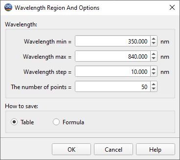

Wavelength Region and Options
- This window allows specifying a spectral region and the number
of spectral points for which Layer Material or Substrate Material parameters are to be saved in the following Save to Database of Layers and Substrates dialog.

- It is also possible to select the preferred data format. If
Table is selected, data will be saved as a spreadsheet; otherwise, corresponding formula coefficients will be saved.